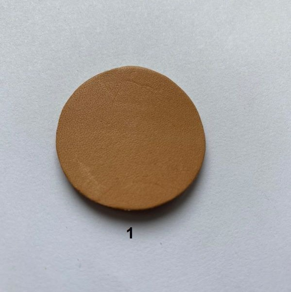
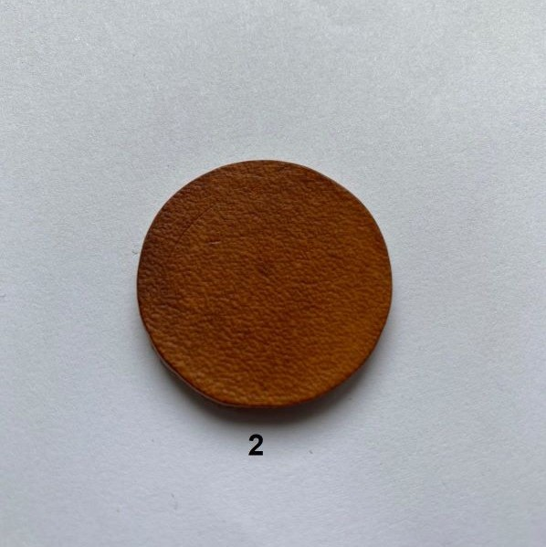
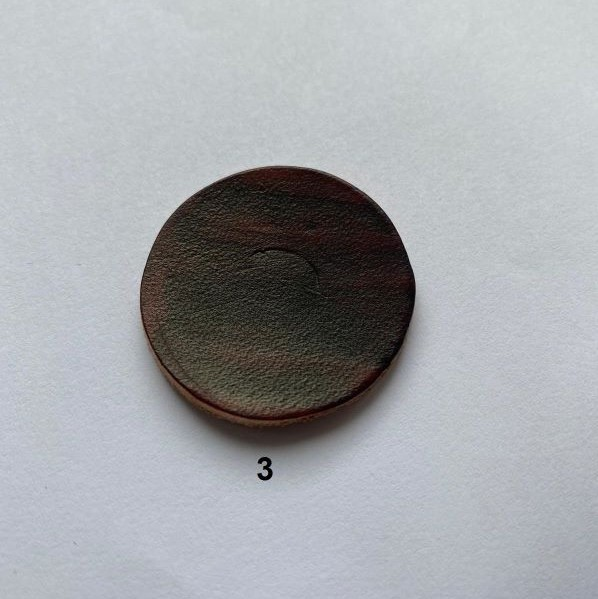

Pracownia Rymarska Marek Kłoda
Kolory wyrobów
Repliki wykonywane są w czterech podstawowych kolorach:
 


1 - naturalny; 2 - jasny brąz;
3 - ciemny brąz; 4 - czarny;
Ze względu na indywidualne cechy skóry, odcienie mogą różnić się nieznacznie od przedstawionych powyżej.
Poszczególne repliki mogą być wykonane w dowolnie wybranym kolorze.
×

tel. 505 826 339, e - mail: repliki@poczta.onet.pl
Copyrights 2022 Pracownia Rymarska Marek Kłoda